Weapons
Show filters


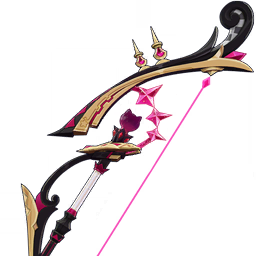
The First Great Magic
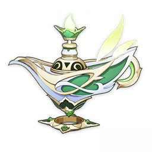
A Thousand Floating Dreams
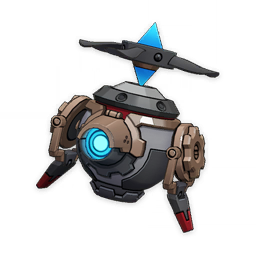
Cashflow Supervision


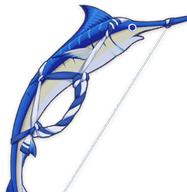
End of the Line


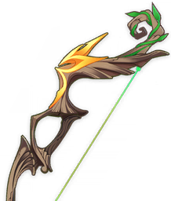
King's Squire


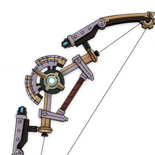
Range Gauge


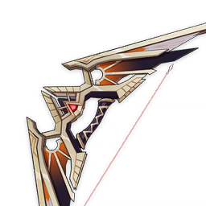
Scion of the Blazing Sun


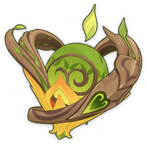
Fruit of Fulfillment


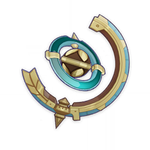
Wandering Evenstar
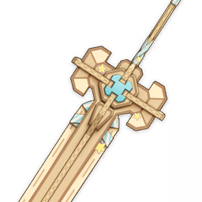
"Ultimate Overlord's Mega Magic Sword"


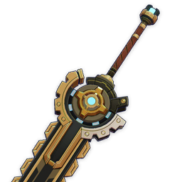
Portable Power Saw


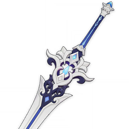
Tidal Shadow

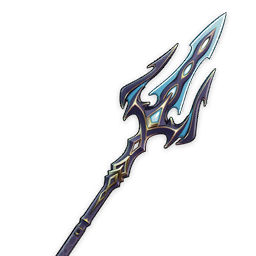
Ballad of the Fjords


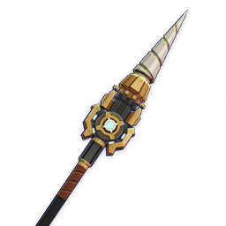
Prospector's Drill
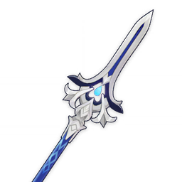
Rightful Reward


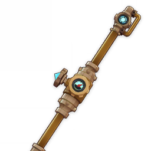
Fleuve Cendre Ferryman


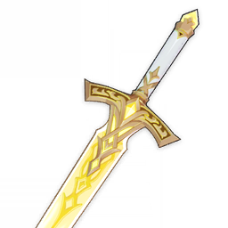
Sword of Narzissenkreuz